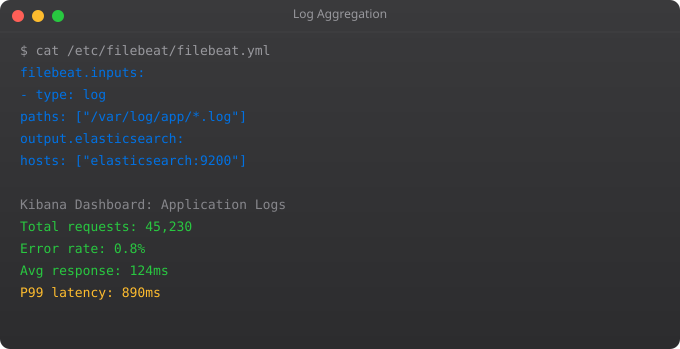

Ansible solves the configuration management problem. When you have 10 servers, you can configure them manually. When you have 100, manual configuration is impossible -- it is slow, inconsistent, and a source of configuration drift where servers gradually become different from each other. Ansible lets you define desired server state in YAML and apply it across any number of servers simultaneously.
# inventory/hosts.yml
all:
children:
webservers:
hosts:
web1:
ansible_host: 10.0.1.10
web2:
ansible_host: 10.0.1.11
vars:
ansible_user: ubuntu
ansible_ssh_private_key_file: ~/.ssh/aws-key.pem
databases:
hosts:
db1:
ansible_host: 10.0.2.10
# Test connectivity to all hosts
ansible all -i inventory/ -m ping# playbooks/install_nginx.yml
---
- name: Install and configure Nginx
hosts: webservers
become: true # Run as sudo
vars:
nginx_port: 80
app_name: myapp
tasks:
- name: Update apt cache
apt:
update_cache: yes
cache_valid_time: 3600
- name: Install nginx
apt:
name: nginx
state: present
- name: Copy nginx config
template:
src: templates/nginx.conf.j2
dest: /etc/nginx/sites-available/{{ app_name }}
notify: Reload nginx # Trigger handler
- name: Enable site
file:
src: /etc/nginx/sites-available/{{ app_name }}
dest: /etc/nginx/sites-enabled/{{ app_name }}
state: link
- name: Ensure nginx is running
service:
name: nginx
state: started
enabled: yes
handlers:
- name: Reload nginx
service:
name: nginx
state: reloaded
# Run it
ansible-playbook -i inventory/ playbooks/install_nginx.ymlroles/
nginx/
tasks/
main.yml # Task definitions
handlers/
main.yml # Handlers
templates/
nginx.conf.j2 # Jinja2 templates
vars/
main.yml # Role variables
defaults/
main.yml # Default variables
files/
index.html # Static files
meta/
main.yml # Role metadata
# Use role in a playbook
- name: Configure webservers
hosts: webservers
roles:
- nginx
- ssl-certificates
- app-deployYes. Ansible connects to remote servers via SSH (for Linux) or WinRM (for Windows) and requires no agent installed on managed nodes. This is one of Ansible's biggest advantages -- you can manage any server you can SSH to.
Ansible uses push model (you initiate from a control node), agentless, YAML syntax. Puppet and Chef use pull model (agents check in periodically), require agents, use their own DSL. Ansible is simpler to start with and sufficient for most use cases.
Idempotent tasks produce the same result whether run once or many times. If nginx is already installed, the install task does nothing. This makes it safe to re-run playbooks to ensure current state without causing errors or unintended changes.
Handlers are tasks that only run when notified by other tasks. A config file change notifies the Reload nginx handler, which runs only if the config actually changed. This avoids restarting services unnecessarily.
Use Ansible Vault: ansible-vault encrypt secrets.yml encrypts a file. Use ansible-playbook --ask-vault-pass or --vault-password-file. For production, integrate with HashiCorp Vault or AWS Secrets Manager using Ansible lookup plugins.
In Part 9, we cover monitoring and observability -- ensuring you know what your systems are doing in production.
← Back to Blog# Install AWS inventory plugin
pip install boto3
# inventory/aws_ec2.yml
plugin: amazon.aws.aws_ec2
regions:
- ap-south-1
filters:
instance-state-name: running
tag:Environment: production
keyed_groups:
- key: tags.Role
prefix: role
compose:
ansible_host: public_ip_address
# Run against dynamic inventory
ansible-playbook -i inventory/ playbooks/deploy.yml---
- name: Rolling deploy to webservers
hosts: role_webserver
serial: 2 # Deploy to 2 servers at a time
max_fail_percentage: 25 # Abort if more than 25% fail
tasks:
- name: Remove from load balancer
local_action:
module: community.aws.elb_instance
instance_id: "{{ ansible_ec2_instance_id }}"
state: absent
- name: Deploy new version
copy:
src: "{{ app_artifact }}"
dest: /opt/myapp/
- name: Restart service
systemd:
name: myapp
state: restarted
- name: Health check
uri:
url: http://localhost:8000/health
status_code: 200
retries: 5
delay: 10
- name: Re-add to load balancer
local_action:
module: community.aws.elb_instance
instance_id: "{{ ansible_ec2_instance_id }}"
state: presentansible-vault encrypt group_vars/production/secrets.yml
ansible-vault view group_vars/production/secrets.yml
ansible-vault edit group_vars/production/secrets.yml
ansible-playbook deploy.yml --ask-vault-pass
ansible-playbook deploy.yml --vault-password-file ~/.vault_pass---
- name: Deploy to Kubernetes
hosts: localhost # Run locally, talk to K8s API
vars:
namespace: production
image_tag: "{{ lookup('env', 'IMAGE_TAG') }}"
tasks:
- name: Update deployment image
kubernetes.core.k8s:
state: present
definition:
apiVersion: apps/v1
kind: Deployment
metadata:
name: myapp
namespace: "{{ namespace }}"
spec:
template:
spec:
containers:
- name: myapp
image: "myrepo/myapp:{{ image_tag }}"
- name: Wait for rollout
command: kubectl rollout status deployment/myapp -n {{ namespace }}
register: result
until: result.rc == 0
retries: 10
delay: 30# Variable precedence (highest to lowest):
# 1. Extra vars (-e "key=value" on command line) HIGHEST
# 2. Task vars (vars: in a task)
# 3. Block vars
# 4. Role and include vars
# 5. Set_facts
# 6. Registered vars
# 7. Host vars (host_vars/hostname.yml)
# 8. Group vars (group_vars/groupname.yml)
# 9. Role defaults (lowest)
# group_vars/production.yml
db_host: prod-db.internal
app_port: 8000
log_level: WARNING
# host_vars/web1.yml (overrides group vars for this host)
app_port: 9000 # This host uses different port
# Override at runtime (highest priority)
ansible-playbook deploy.yml -e "app_version=2.0.0 log_level=DEBUG"# requirements.yml
collections:
- name: amazon.aws
version: "7.0.0"
- name: community.docker
version: "3.4.0"
- name: kubernetes.core
version: "2.4.0"
roles:
- name: geerlingguy.docker
version: "7.0.0"
# Install everything
ansible-galaxy collection install -r requirements.yml
ansible-galaxy role install -r requirements.yml
# Use AWS collection in playbook
- name: Create S3 bucket
amazon.aws.s3_bucket:
name: my-new-bucket
state: present
region: ap-south-1